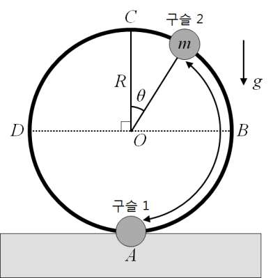

문제 1
반경 \(R\)의 원형 루프(\(ABCD\))가 수직으로 세워져 있고, 이 루프에 동일한 전하량을 갖는 구슬 두 개가 꿰어져 있다. 구슬 1은 최하점(\(A\))에 고정되어 있고, 구슬 2는 루프를 따라 마찰 없이 움직일 수 있다. 전기력과 중력에 의해 구슬 2는 루프의 어느 위치에서 평형을 이루게 될 것이다. 구슬 2의 질량은 \(m\), 중력가속도는 \(g\)이며, 쿨롱 법칙의 비례 상수는 \(k\)이다.

1-1
구슬 2가 루프의 중간점 \(B\) (\(\theta = \pi/2\))에서 평형을 이루기 위한 전하량(\(Q_1\))을 구하시오.
1-2
문제 1-1의 상태에서 두 구슬의 전하량을 서서히 증가시켜서 구슬 2의 위치를 중간점 \(B\)에서 최고점 \(C\)까지 점진적으로 올리는 상황을 생각해보자. 이때 구슬 2가 루프의 최고점 \(C\)에서 평형을 이루기 위해 필요한 최소의 전하량(\(Q_2\))을 구하시오. 이때 구슬 2에 작용하는 전기력과 중력 사이의 크기 비는 얼마인가?
(참고) \(\sin(\alpha + \beta) = \sin\alpha\cos\beta + \cos\alpha\sin\beta\)
1-3
두 구슬의 전하량을 문제 1-2에서 구한 \(Q_2\) 값의 두 배로 늘렸다. 이때 \(C\) 점 근방에서 루프를 따라 구슬 2를 약하게 밀어주면(\(\theta\)가 충분히 작으면) 단진동을 하게 된다. 이 단진동의 주기를 \(m\), \(g\), \(R\)의 함수로 구하시오.